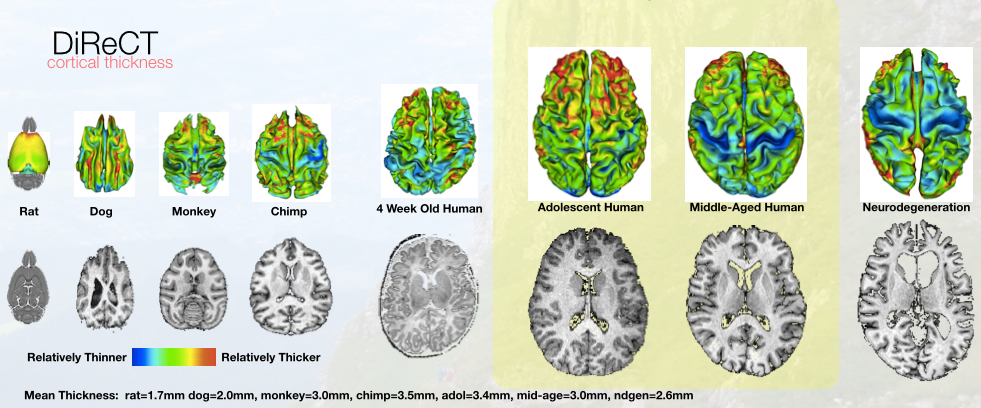
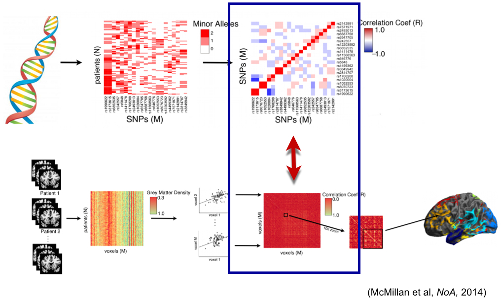
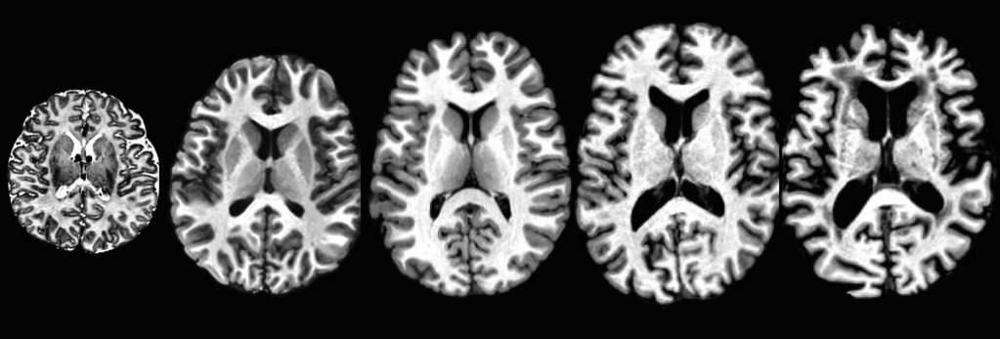
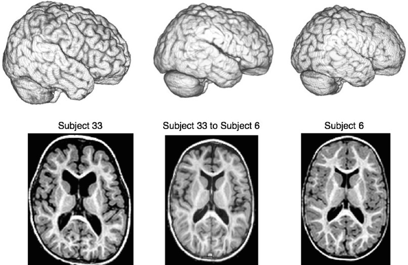
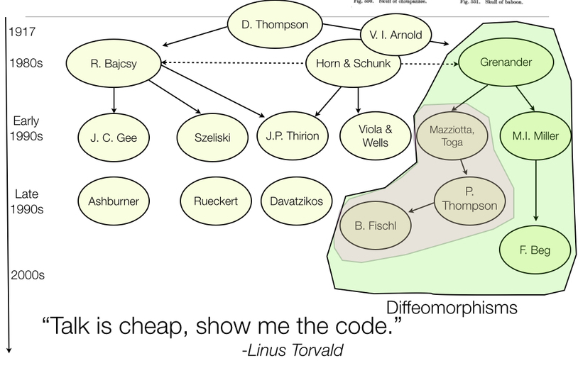

An Exegesis of Advanced Normalization Tools (ANTs)
Brian B. Avants, Nicholas J. Tustison, Hans J. Johnson & the ITK and registration community
Background
Tools you can use for imaging science
Core developers: B. Avants, N. Tustison, H. J. Johnson, J. T. Duda
Many contributors, including users …
Multi-platform, multi-threaded C++ stnava.github.io/ANTs
Developed in conjunction with http://www.itk.org/
R wrapping and extension stnava.github.io/ANTsR
rapid development, regular testing \(+\) many eyes \(\rightarrow\) bugs are shallow

General theory tunable to specific domains: no-free lunch

Use prior knowledge to broaden performance

Library for multivariate image registration, segmentation & statistics


ITK+ANTs+R = ANTsR

How do we quantify life span brain health in individuals and in populations?

How do we integrate modalities and organ systems?
need unbrain example here
ANTsR \(\rightarrow\) new insight via quantification
Good software should fade into the background … however …
As is common in science, the first big breakthrough in our understanding … [came from] an improvement in measurement.
> Daniel Kahnemann, Thinking, Fast and Slow (2011)

Theory + evaluation + reproducibility


A long history of research

Rigorous transformation definition is key
ANTs and ITK are developed together: see B. B. Avants et al. (2014), Tustison and Avants (2013), Tustison et al. (2010) and more …
Key definitions
physical space
transformation definition aware of physical space
optimization space consistent with above
unit testing
Merit Badges
bart

open source
built on ITK—probably the most well-vetted medical image analysis package in the world B. B. Avants and Tustison (2014)
competitions
- Klein 2009: Brain Registration (ANTs)
- Murphy 2010: Lung Registration (ANTs)
- SATA 2012: Multi-Atlas Segmentation (ANTs+JointLabelFusion)
- SATA 2013: Multi-Atlas Segmentation (ANTs+JointLabelFusion)
- BRATS 2013: Multivariate Brain Segmentation (ANTsR)
- Yushkevich’s Hipp Atlas: ( hippocampusubfield.com )
- TBA: BOLD decoding (ANTsR)
- Substantial work with DTI ( Camino developer in house )
- STACOM2014 ?
papers
registration : ANTs vs. everything else Klein et al. (2009)
segmentation : Atropos vs. SPM, etc.
bias correction : N4 vs N3
cortical thickness : ANTs vs. FreeSurfer Tustison et al. (2014)
compatibility with R
The stories behind ANTs development
Registration
N4
N3 (developed at the Montreal Neurological Institute) has been the gold standard for bias correction—used in important projects such as ADNI
N3 is a set of perl scripts that works natively with the MINC file format which we tried to incorporate into an ANTs processing pipeline.
We had so much trouble converting back and forth between ITK-compatible Nifti format and MINC that Brian suggested we try to implement N3 in ITK.
I had some experience with B-splines and added some other tweaks giving birth to N4.
Atropos
Similar to our experience with N3, we tried to incorporate FAST (from the FMRIB at Oxford) into an ANTs processing pipeline.
Phil (?) pointed out the difficulty of incorporating priors into FAST.
Related, Brian went to a segmentation-related worksop at MICCAI and aired publicly his disappointment that so much of what had been developed in the community over the last 20+ years has not been made publicly available. “What’s wrong with you people!”
3-tissue algorithm in ImageMath —> multivariate, n-class Atropos

KellySlater –> KellyKapowski
Components
Software engineering
Analysis philosophy and published opinions
Voodoo in voxel-based analysis
Instrumentation bias in the use and evaluation of software
Discussion
Problems
There are several problems and shortcomings to this analysis.
- Customizable for specific problems but not too specific
- Latest theoretical advances in registration not yet wrapped for users
Strengths
Some strengths include relatively few assumptions, a flexible implementation and open-science approach.
References
Avants, Brian B., and Nicholas J. Tustison. 2014. “The ITK Image Registration Framework.” Front Neuroinform 7: 39. doi:10.3389/fninf.2013.00039. http://dx.doi.org/10.3389/fninf.2013.00039.
Avants, Brian B., Nicholas J. Tustison, Michael Stauffer, Gang Song, Baohua Wu, and James C. Gee. 2014. “The Insight ToolKit Image Registration Framework.” Front Neuroinform 8: 44. doi:10.3389/fninf.2014.00044. http://dx.doi.org/10.3389/fninf.2014.00044.
Klein, Arno, Jesper Andersson, Babak A Ardekani, John Ashburner, Brian Avants, Ming-Chang Chiang, Gary E Christensen, et al. 2009. “Evaluation of 14 Nonlinear Deformation Algorithms Applied to Human Brain MRI Registration.” Neuroimage 46 (3) (Jul): 786–802. doi:10.1016/j.neuroimage.2008.12.037. http://dx.doi.org/10.1016/j.neuroimage.2008.12.037.
Tustison, Nicholas J., and Brian B. Avants. 2013. “Explicit B-Spline Regularization in Diffeomorphic Image Registration.” Front Neuroinform 7: 39. doi:10.3389/fninf.2013.00039. http://dx.doi.org/10.3389/fninf.2013.00039.
Tustison, Nicholas J., Brian B. Avants, Philip A. Cook, Yuanjie Zheng, Alexander Egan, Paul A. Yushkevich, and James C. Gee. 2010. “N4ITK: improved N3 Bias Correction.” IEEE Trans Med Imaging 29 (6) (Jun): 1310–1320. doi:10.1109/TMI.2010.2046908. http://dx.doi.org/10.1109/TMI.2010.2046908.
Tustison, Nicholas J., Philip A. Cook, Arno Klein, Gang Song, Sandhitsu R. Das, Jeffrey T. Duda, Benjamin M. Kandel, et al. 2014. “Large-Scale Evaluation of ANTs and FreeSurfer Cortical Thickness Measurements.” Neuroimage 99 (Oct): 166–179. doi:10.1016/j.neuroimage.2014.05.044. http://dx.doi.org/10.1016/j.neuroimage.2014.05.044.